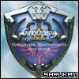

Well I haven't been here in awhile and just dropped by. I was Hermos, but with a name change (yay).
So anyways... here's a few sigs I made from boredom:


^ White border!
+


Um so how are they?
Edit: I can take a few requests...
So anyways... here's a few sigs I made from boredom:
^ White border!
+

Um so how are they?
Edit: I can take a few requests...
")